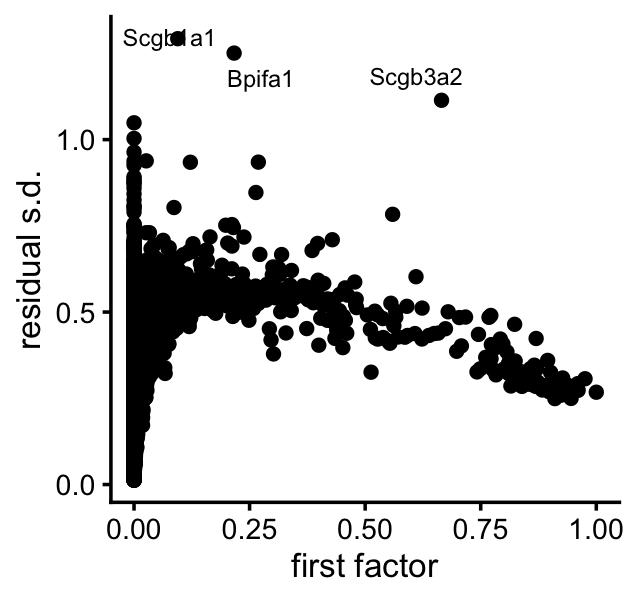
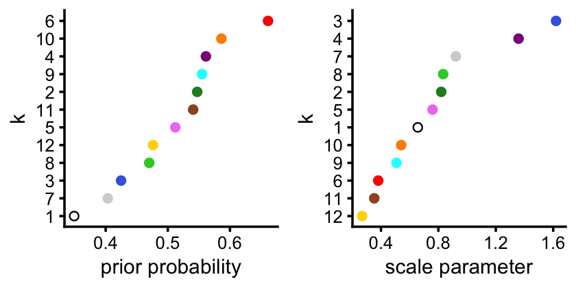
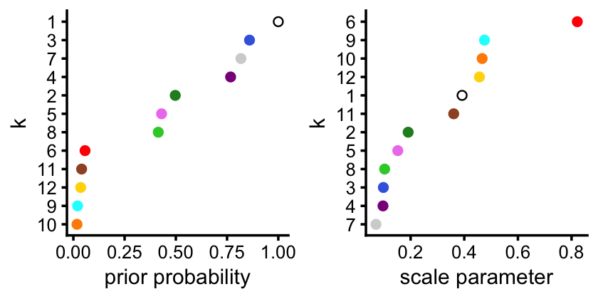
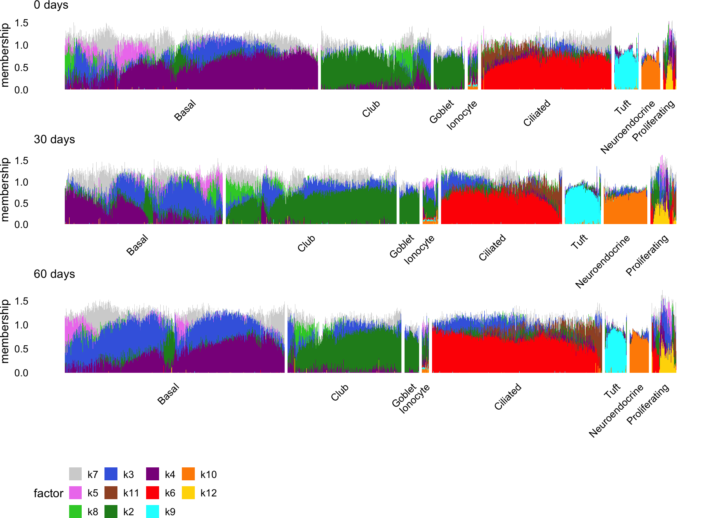
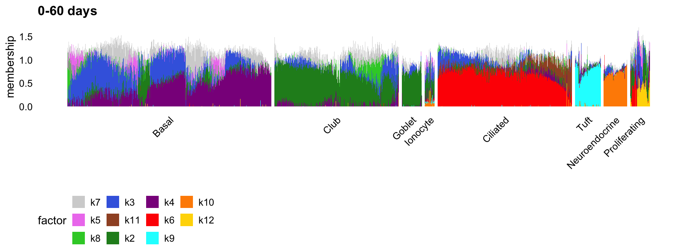
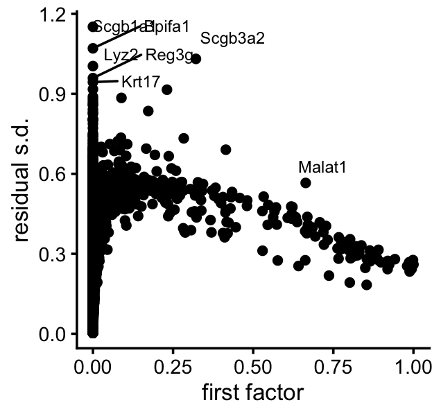
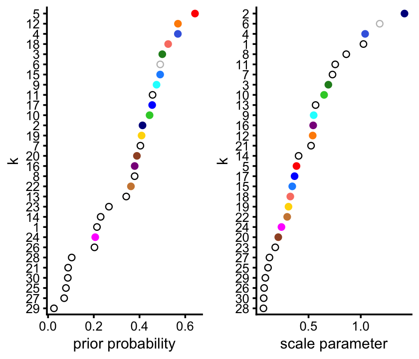
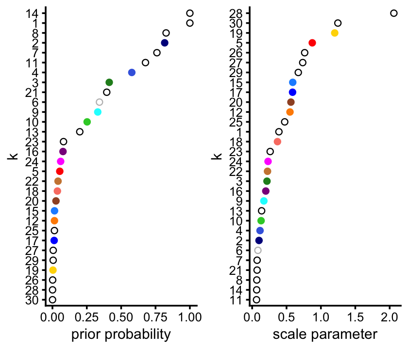
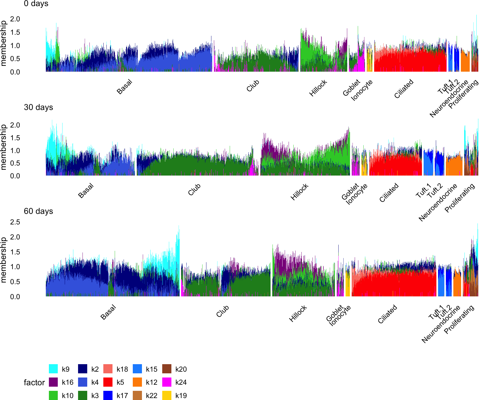
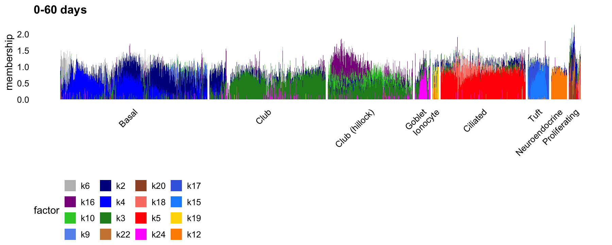

Last updated: 2026-09-03
Checks: 7 0
Knit directory: ebnmf-paper/
This reproducible R Markdown analysis was created with workflowr (version 1.7.1). The Checks tab describes the reproducibility checks that were applied when the results were created. The Past versions tab lists the development history.
Great! Since the R Markdown file has been committed to the Git repository, you know the exact version of the code that produced these results.
Great job! The global environment was empty. Objects defined in the global environment can affect the analysis in your R Markdown file in unknown ways. For reproduciblity it’s best to always run the code in an empty environment.
The command set.seed(20231214) was run prior to running
the code in the R Markdown file. Setting a seed ensures that any results
that rely on randomness, e.g. subsampling or permutations, are
reproducible.
Great job! Recording the operating system, R version, and package versions is critical for reproducibility.
Nice! There were no cached chunks for this analysis, so you can be confident that you successfully produced the results during this run.
Great job! Using relative paths to the files within your workflowr project makes it easier to run your code on other machines.
Great! You are using Git for version control. Tracking code development and connecting the code version to the results is critical for reproducibility.
The results in this page were generated with repository version 69f6ddc. See the Past versions tab to see a history of the changes made to the R Markdown and HTML files.
Note that you need to be careful to ensure that all relevant files for
the analysis have been committed to Git prior to generating the results
(you can use wflow_publish or
wflow_git_commit). workflowr only checks the R Markdown
file, but you know if there are other scripts or data files that it
depends on. Below is the status of the Git repository when the results
were generated:
Ignored files:
Ignored: .DS_Store
Ignored: analysis/.DS_Store
Ignored: analysis/lps_fail_cache/
Ignored: output/.DS_Store
Ignored: output/montoro_ebmf_fits.RData
Untracked files:
Untracked: flash_greedy_init_noisy_F.txt
Untracked: flash_greedy_init_noisy_L.txt
Untracked: noisy_swimmer.mat
Untracked: noisy_swimmer_more.pdf
Untracked: scripts/svm.test.normgrey.gz
Untracked: scripts/svm.train.normgrey.gz
Note that any generated files, e.g. HTML, png, CSS, etc., are not included in this status report because it is ok for generated content to have uncommitted changes.
These are the previous versions of the repository in which changes were
made to the R Markdown (analysis/montoro_plots.Rmd) and
HTML (docs/montoro_plots.html) files. If you’ve configured
a remote Git repository (see ?wflow_git_remote), click on
the hyperlinks in the table below to view the files as they were in that
past version.
| File | Version | Author | Date | Message |
|---|---|---|---|---|
| Rmd | 69f6ddc | Peter Carbonetto | 2026-09-03 | wflow_publish("analysis/montoro_plots.Rmd", view = F, verbose = T) |
| html | 45c4516 | Peter Carbonetto | 2026-09-03 | Build site. |
| Rmd | c256170 | Peter Carbonetto | 2026-09-03 | Small fix to the plots. |
| Rmd | e925a6c | Peter Carbonetto | 2026-09-03 | A few more adjustments to the structure plots. |
| Rmd | 0665d63 | Peter Carbonetto | 2026-09-03 | Updating the structure plots for the k=30 fit. |
| Rmd | 6511353 | Peter Carbonetto | 2026-09-03 | Updated some of the plots for the k=30 fit. |
| html | a76fb76 | Peter Carbonetto | 2026-09-01 | Build site. |
| Rmd | 584db26 | Peter Carbonetto | 2026-09-01 | wflow_publish("analysis/montoro_plots.Rmd", verbose = T, view = F) |
| html | 8dedf0d | Peter Carbonetto | 2026-09-01 | Build site. |
| Rmd | 623d015 | Peter Carbonetto | 2026-09-01 | wflow_publish("analysis/montoro_plots.Rmd", verbose = T, view = F) |
| html | aed340f | Peter Carbonetto | 2026-09-01 | Build site. |
| Rmd | 76fce32 | Peter Carbonetto | 2026-09-01 | wflow_publish("analysis/montoro_plots.Rmd", view = F, verbose = T) |
| html | a904cfb | Peter Carbonetto | 2026-09-01 | Ran wflow_publish("montoro_plots.Rmd"). |
| Rmd | c4ee248 | Peter Carbonetto | 2026-09-01 | Improved the structure plots. |
| Rmd | 00dd5b3 | Peter Carbonetto | 2026-09-01 | Added some notes to the montoro_plots analysis. |
| Rmd | 4f45962 | Peter Carbonetto | 2026-09-01 | A few fixes to the plots in montoro_plots.Rmd. |
| Rmd | 78e5355 | Peter Carbonetto | 2026-08-31 | fixed a couple bugs in the structure plots. |
| Rmd | c8708bb | Peter Carbonetto | 2026-08-31 | Fixed a typo. |
| html | 2a4e939 | Peter Carbonetto | 2026-08-31 | Ran wflow_publish("analysis/montoro_plots.Rmd"). |
| Rmd | 88baf7a | Peter Carbonetto | 2026-08-31 | A few adjustments to the plots. |
| Rmd | 558a28f | Peter Carbonetto | 2026-08-31 | Added structure plots for k=12 fit to montoro_plots analysis. |
| Rmd | 0e7adf0 | Peter Carbonetto | 2026-08-31 | A few adjustments to the plots. |
| Rmd | 3c4ba3e | Peter Carbonetto | 2026-08-31 | Added plots summarizing fitted priors and residuals for k=12 ebnmf model. |
| Rmd | e096b49 | Peter Carbonetto | 2026-08-31 | Added steps to load ebnmf outputs into montoro_plots analysis. |
| html | 3c94cc0 | Peter Carbonetto | 2026-08-28 | Fixed some of the settings in the montoro_plots workflowr page. |
| Rmd | 2e94652 | Peter Carbonetto | 2026-08-28 | wflow_publish("montoro_plots.Rmd") |
| html | 8cf02e1 | Peter Carbonetto | 2026-08-28 | First build of the montoro_plots workflowr page. |
| Rmd | ec82b5b | Peter Carbonetto | 2026-08-28 | wflow_publish("montoro_plots.Rmd") |
Here I will create some plots to learn more about the EBNMF analysis of the Montoro et al data set.
Load some R packages that I will use to study the results:
library(ggplot2)
library(cowplot)
library(fastTopics)Set the seed for reproducibility:
set.seed(1)Load the EBNMF results obtained from running the
montoro_fits.R script:
load("output/montoro_ebmf_fits.RData")Extract some information about the cells:
x <- rownames(fl_k12$fl_ldf$F)
x <- strsplit(x,"_",fixed = TRUE)
meta_data <- data.frame(barcode = sapply(x,"[[",1),
timepoint = sapply(x,"[[",2),
mouse = sapply(x,"[[",3),
lineage = sapply(x,"[[",4),
celltype = sapply(x,"[[",5))
meta_data <- transform(meta_data,
timepoint = factor(timepoint),
mouse = factor(mouse),
lineage = factor(lineage),
celltype = factor(celltype))First is a plot of the first (“baseline”) factor vs. the residual s.d. parameters:
residuals_plot <- function (baseline_exp, residual_sd) {
pdat <- data.frame(baseline_exp = baseline_exp,
residual_sd = residual_sd)
return(ggplot(pdat,aes(x = baseline_exp,y = residual_sd)) +
geom_point(color = "black") +
labs(x = "baseline expression",y = "residual s.d.") +
theme_cowplot(font_size = 10))
}
residuals_plot(baseline_exp = fl_k12$fl_ldf$L[,1],
residual_sd = fl_k12$residuals_sd)
| Version | Author | Date |
|---|---|---|
| 2a4e939 | Peter Carbonetto | 2026-08-31 |
These next plots summarize the priors on \({\bf F}\) and \({\bf L}\), and could accompany the Structure plot shown below. However I’m not sure if the scale parameter tells us anything useful—it is mainly the prior probability that should inform the sparsity pattern. So maybe in the end we will only use the left-hand plots.
The first two plots show the priors on the columns of \({\bf L}\).
factor_colors <- c(k1 = "black",k2 = "forestgreen",k3 = "royalblue",
k4 = "darkmagenta",k5 = "violet",k6 = "red",
k7 = "lightgray",k8 = "limegreen",k9 = "cyan",
k10 = "darkorange",k11 = "sienna",k12 = "gold")
fitted_priors_plot <- function (ghat, colors) {
K <- length(ghat)
pdat <- data.frame(k = 1:K,
pi = sapply(ghat,function (x) x$pi[2]),
scale = sapply(ghat,function (x) x$scale[2]),
color = colors)
rows1 <- order(pdat$pi,decreasing = FALSE)
rows2 <- order(pdat$scale,decreasing = FALSE)
pdat1 <- pdat[rows1,]
pdat2 <- pdat[rows2,]
pdat1 <- transform(pdat1,k = factor(k,k))
pdat2 <- transform(pdat2,k = factor(k,k))
p1 <- ggplot(pdat1,aes(x = pi,y = k,color = k)) +
geom_point() +
scale_color_manual(values = pdat1$color) +
labs(x = "prior probability") +
guides(color = "none") +
theme_cowplot(font_size = 9)
p2 <- ggplot(pdat2,aes(x = scale,y = k,color = k)) +
geom_point() +
scale_color_manual(values = pdat2$color) +
labs(x = "scale parameter") +
guides(color = "none") +
theme_cowplot(font_size = 9)
return(plot_grid(p1,p2,nrow = 1,ncol = 2))
}
fitted_priors_plot(fl_k12$L_ghat,unname(factor_colors))
The second two plots show the priors on the columns of \({\bf F}\).
fitted_priors_plot(fl_k12$F_ghat,unname(factor_colors))
The non-negative matrix factorization with \(K = 12\) factors identifies the higher-level structures in the Montoro et al data set:
set.seed(1)
factors_to_plot <- c(7,4,5,11,8,2,6,9,10,3,12)
celltypes <- as.character(meta_data$celltype)
celltypes[celltypes == "Club (hillock-associated)"] <- "Club"
celltypes[celltypes == "Goblet.1"] <- "Goblet"
celltypes[celltypes == "Goblet.2"] <- "Goblet"
celltypes[celltypes == "Goblet.progenitor"] <- "Goblet"
celltypes[celltypes == "Tuft.1"] <- "Tuft"
celltypes[celltypes == "Tuft.2"] <- "Tuft"
celltypes[celltypes == "Tuft.progenitor"] <- "Tuft"
celltypes <- factor(celltypes,
c("Basal","Club","Goblet","Ionocyte","Ciliated",
"Tuft","Neuroendocrine","Proliferating"))
scale_cols <- function (A)
return(t(t(A) / apply(A,2,max)))
L <- fl_k12$fl_ldf$L
L <- scale_cols(L)
F <- fl_k12$fl_ldf$F
F <- scale_cols(F)
colnames(L) <- paste0("k",1:12)
colnames(F) <- paste0("k",1:12)
rows <- c(sample(which(celltypes == "Basal" &
meta_data$lineage == "Tom"),4000),
sample(which(celltypes == "Club" &
meta_data$lineage == "Tom"),2500),
which(celltypes != "Basal" &
celltypes != "Club" &
meta_data$lineage == "Tom"))
rows <- sort(rows)
F <- F[rows,]
celltypes <- celltypes[rows]
rows1 <- which(meta_data[rows,"timepoint"] == "Tp0")
rows2 <- which(meta_data[rows,"timepoint"] == "Tp30")
rows3 <- which(meta_data[rows,"timepoint"] == "Tp60")
p1 <- structure_plot(F[rows1,],grouping = celltypes[rows1],gap = 10,
topics = factors_to_plot,colors = factor_colors) +
labs(y = "membership",title = "0 days") +
guides(fill = "none") +
theme(plot.title = element_text(size = 9,face = "plain"),
plot.margin = unit(c(t = 0,r = 0,b = -2,l = 0),"lines"))
p2 <- structure_plot(F[rows2,],grouping = celltypes[rows2],gap = 10,
topics = factors_to_plot,colors = factor_colors) +
labs(y = "membership",title = "30 days") +
guides(fill = "none") +
theme(plot.title = element_text(size = 9,face = "plain"),
plot.margin = unit(c(t = 0,r = 0,b = -2,l = 0),"lines"))
p3 <- structure_plot(F[rows3,],grouping = celltypes[rows3],gap = 10,
topics = factors_to_plot,colors = factor_colors) +
labs(y = "membership",fill = "factor",title = "60 days") +
theme(plot.title = element_text(size = 9,face = "plain"),
plot.margin = unit(c(t = 0,r = 0,b = 0,l = 0),"lines"))
plot_grid(p1,p2,p3,nrow = 3,ncol = 1,rel_heights = c(1,1,1.85))
Note the number of cells per cell-type:
table(meta_data$celltype,meta_data$timepoint)
#
# Tp0 Tp30 Tp60
# Basal 13337 11822 16934
# Ciliated 772 873 1371
# Club 2726 5830 5012
# Club (hillock-associated) 539 1963 1630
# Goblet.1 40 26 13
# Goblet.2 4 1 4
# Goblet.progenitor 126 93 96
# Ionocyte 63 116 97
# Neuroendocrine 104 318 208
# Proliferating 217 586 610
# Tuft.1 77 187 149
# Tuft.2 53 113 93
# Tuft.progenitor 5 33 24Structure plot merging the three time points:
structure_plot(F,grouping = celltypes,gap = 10,topics = factors_to_plot,
colors = factor_colors) +
labs(y = "membership",title = "0-60 days")
| Version | Author | Date |
|---|---|---|
| 8dedf0d | Peter Carbonetto | 2026-09-01 |
Plot first (“baseline”) factor vs. the residual s.d. parameters:
residuals_plot(baseline_exp = fl_k30$ldf$L[,1],
residual_sd = fl_k30$residuals_sd)
| Version | Author | Date |
|---|---|---|
| 45c4516 | Peter Carbonetto | 2026-09-03 |
Plots summarizing the priors on the columns of \({\bf L}\):
factor_colors <-
c(k1 = "black",k2 = "darkblue",k3 = "forestgreen",k4 = "blue",
k5 = "red",k6 = "gray",k7 = "black",k8 = "black",
k9 = "cornflowerblue",k10 = "limegreen",k11 = "black",k12 = "darkorange",
k13 = "black",k14 = "black",k15 = "dodgerblue",k16 = "darkmagenta",
k17 = "royalblue",k18 = "salmon",k19 = "gold",k20 = "sienna",
k21 = "black",k22 = "peru",k23 = "black",k24 = "magenta",
k25 = "black",k26 = "black",k27 = "black",k28 = "black",
k29 = "black",k30 = "black")
fitted_priors_plot(fl_k30$L_ghat,unname(factor_colors))
| Version | Author | Date |
|---|---|---|
| 45c4516 | Peter Carbonetto | 2026-09-03 |
Plots summarizing the priors on the columns of \({\bf F}\):
fitted_priors_plot(fl_k30$F_ghat,unname(factor_colors))
| Version | Author | Date |
|---|---|---|
| 45c4516 | Peter Carbonetto | 2026-09-03 |
Notice that the priors on \({\bf F}\) (which contains the memberships) is a priori much more sparse than \({\bf L}\)
The \(K = 30\) fit captures more fine-scale structure. The Structure plots show the primary cell-type-structure captured by the factors. (Factors that capture other types of structure are not shown.) Here we focus on the non-lineage-labeled cells (“tdTomato”) since the lineage-labeled cells feature fewer of the rare cell types such as goblet and ionocyte.
set.seed(1)
celltype_factors <- c(6,16,10,9,2,4,3,22,20,18,5,24,17,15,19,12)
celltypes <- meta_data$celltype
celltypes <- as.character(meta_data$celltype)
celltypes[celltypes == "Club (hillock-associated)"] <- "Club (hillock)"
celltypes[celltypes == "Goblet.1"] <- "Goblet"
celltypes[celltypes == "Goblet.2"] <- "Goblet"
celltypes[celltypes == "Goblet.progenitor"] <- "Goblet"
celltypes[celltypes == "Tuft.1"] <- "Tuft"
celltypes[celltypes == "Tuft.2"] <- "Tuft"
celltypes[celltypes == "Tuft.progenitor"] <- "Tuft"
celltypes <- factor(celltypes,
c("Basal","Club","Club (hillock)",
"Goblet","Ionocyte","Ciliated",
"Tuft","Neuroendocrine","Proliferating"))
L <- fl_k30$ldf$L
L <- scale_cols(L)
F <- fl_k30$ldf$F
for (i in 1:30) {
y <- quantile(F[,i],0.999)
F[,i] <- pmin(1,F[,i]/y)
}
colnames(L) <- paste0("k",1:30)
colnames(F) <- paste0("k",1:30)
rows <- c(sample(which(celltypes == "Basal" &
meta_data$lineage == "Tom"),5000),
sample(which(celltypes == "Club" &
meta_data$lineage == "Tom"),4000),
which(celltypes != "Basal" & celltypes != "Club" &
meta_data$lineage == "Tom"))
rows <- sort(rows)
F <- F[rows,]
celltypes <- celltypes[rows]
rows1 <- which(meta_data[rows,"timepoint"] == "Tp0")
rows2 <- which(meta_data[rows,"timepoint"] == "Tp30")
rows3 <- which(meta_data[rows,"timepoint"] == "Tp60")
p1 <- structure_plot(F[rows1,],grouping = celltypes[rows1],gap = 8,
topics = celltype_factors,colors = factor_colors) +
labs(y = "membership",title = "0 days") +
guides(fill = "none") +
theme(plot.title = element_text(size = 9,face = "plain"),
plot.margin = unit(c(t = 0,r = 0,b = -2,l = 0),"lines"))
p2 <- structure_plot(F[rows2,],grouping = celltypes[rows2],gap = 8,
topics = celltype_factors,colors = factor_colors) +
labs(y = "membership",title = "30 days") +
guides(fill = "none") +
theme(plot.title = element_text(size = 9,face = "plain"),
plot.margin = unit(c(t = 0,r = 0,b = -2,l = 0),"lines"))
p3 <- structure_plot(F[rows3,],grouping = celltypes[rows3],gap = 8,
topics = celltype_factors,colors = factor_colors) +
labs(y = "membership",fill = "factor",title = "60 days") +
theme(plot.title = element_text(size = 9,face = "plain"),
plot.margin = unit(c(t = 0,r = 0,b = 0,l = 0),"lines"))
plot_grid(p1,p2,p3,nrow = 3,ncol = 1,rel_heights = c(1,1,1.85))
| Version | Author | Date |
|---|---|---|
| 45c4516 | Peter Carbonetto | 2026-09-03 |
Structure plot merging the three time points:
structure_plot(F,grouping = celltypes,gap = 8,topics = celltype_factors,
colors = factor_colors) +
labs(y = "membership",fill = "factor",title = "0-60 days")
| Version | Author | Date |
|---|---|---|
| 45c4516 | Peter Carbonetto | 2026-09-03 |
Note that factor 15 is more promminent in Tuft-1 and factor 17 is more prominent in Tuft-2:
F <- fl_k30$ldf$F
F <- scale_cols(F)
rows <- which(meta_data$timepoint == "Tp60")
cat("k = 15:\n")
tail(round(sort(tapply(F[rows,15],meta_data[rows,"celltype"],mean)),
digits = 3),n = 3)
cat("k = 17:\n")
tail(round(sort(tapply(F[rows,17],meta_data[rows,"celltype"],mean)),
digits = 3),n = 3)
# k = 15:
# Tuft.2 Tuft.progenitor Tuft.1
# 0.216 0.361 0.687
# k = 17:
# Tuft.1 Tuft.progenitor Tuft.2
# 0.223 0.261 0.644TO DO: Generate tables containing top-ranked genes and “most distinctive” genes for each factor.
sessionInfo()
# R version 4.3.3 (2024-02-29)
# Platform: aarch64-apple-darwin20 (64-bit)
# Running under: macOS 26.5.2
#
# Matrix products: default
# BLAS: /System/Library/Frameworks/Accelerate.framework/Versions/A/Frameworks/vecLib.framework/Versions/A/libBLAS.dylib
# LAPACK: /Library/Frameworks/R.framework/Versions/4.3-arm64/Resources/lib/libRlapack.dylib; LAPACK version 3.11.0
#
# locale:
# [1] en_US.UTF-8/en_US.UTF-8/en_US.UTF-8/C/en_US.UTF-8/en_US.UTF-8
#
# time zone: America/Chicago
# tzcode source: internal
#
# attached base packages:
# [1] stats graphics grDevices utils datasets methods base
#
# other attached packages:
# [1] fastTopics_0.7-46 cowplot_1.1.3 ggplot2_3.5.2 workflowr_1.7.1
#
# loaded via a namespace (and not attached):
# [1] gtable_0.3.6 xfun_0.52 bslib_0.9.0
# [4] htmlwidgets_1.6.4 processx_3.8.3 ggrepel_0.9.6
# [7] lattice_0.22-5 callr_3.7.5 quadprog_1.5-8
# [10] vctrs_0.6.5 tools_4.3.3 ps_1.7.6
# [13] generics_0.1.4 parallel_4.3.3 tibble_3.3.0
# [16] pkgconfig_2.0.3 Matrix_1.6-5 data.table_1.17.6
# [19] SQUAREM_2021.1 RColorBrewer_1.1-3 RcppParallel_5.1.10
# [22] lifecycle_1.0.4 truncnorm_1.0-9 compiler_4.3.3
# [25] farver_2.1.2 stringr_1.5.1 git2r_0.33.0
# [28] progress_1.2.3 RhpcBLASctl_0.23-42 getPass_0.2-4
# [31] httpuv_1.6.14 htmltools_0.5.8.1 sass_0.4.10
# [34] yaml_2.3.10 lazyeval_0.2.2 plotly_4.11.0
# [37] crayon_1.5.3 tidyr_1.3.1 later_1.4.2
# [40] pillar_1.11.0 jquerylib_0.1.4 whisker_0.4.1
# [43] uwot_0.2.3 cachem_1.1.0 gtools_3.9.5
# [46] tidyselect_1.2.1 digest_0.6.37 Rtsne_0.17
# [49] stringi_1.8.7 reshape2_1.4.4 dplyr_1.1.4
# [52] purrr_1.0.4 ashr_2.2-66 labeling_0.4.3
# [55] rprojroot_2.0.4 fastmap_1.2.0 grid_4.3.3
# [58] cli_3.6.5 invgamma_1.2 magrittr_2.0.3
# [61] dichromat_2.0-0.1 withr_3.0.2 prettyunits_1.2.0
# [64] scales_1.4.0 promises_1.3.3 rmarkdown_2.29
# [67] httr_1.4.7 hms_1.1.3 pbapply_1.7-2
# [70] evaluate_1.0.4 knitr_1.50 viridisLite_0.4.2
# [73] irlba_2.3.5.1 rlang_1.1.6 Rcpp_1.1.0
# [76] mixsqp_0.3-54 glue_1.8.0 rstudioapi_0.15.0
# [79] jsonlite_2.0.0 plyr_1.8.9 R6_2.6.1
# [82] fs_1.6.6